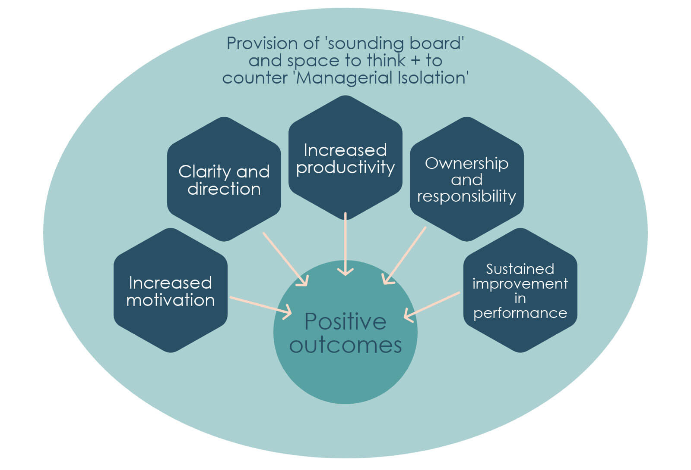

2 Additional benefits of coaching and mentoring
Managerial isolation – occurs when people in management positions seem to lose access to open conversation when issues become problematic.
Additional benefits include:
- strengthening of performance
- increased self-awareness and trust
- identification and application of strengths
- increasing the effectiveness of relationships with clients and colleagues
- organisation of responsibilities
- more effective prioritisation
- having a ‘safe environment’ to offload
- achieving balance between work and personal life
- overcoming barriers to progress
- increasing accountability for implementing changes
- increasing the likelihood and pace of reaching desired goals
- increased sense of loyalty and commitment
- to attract new employees
- improved retention of employees
- a proactive option to improve performance before incurring the costs associated with managing poor performance and poor performers
- issues can be addressed in a non-threatening way
- improved decision making
- discovering hidden potential and achieving it quickly
- providing stimulation for employees
- gaining fresh and broader perspectives
- increasing the range of options in finding solutions, leading to better decision making
- improved efficiency
- increased profitability.